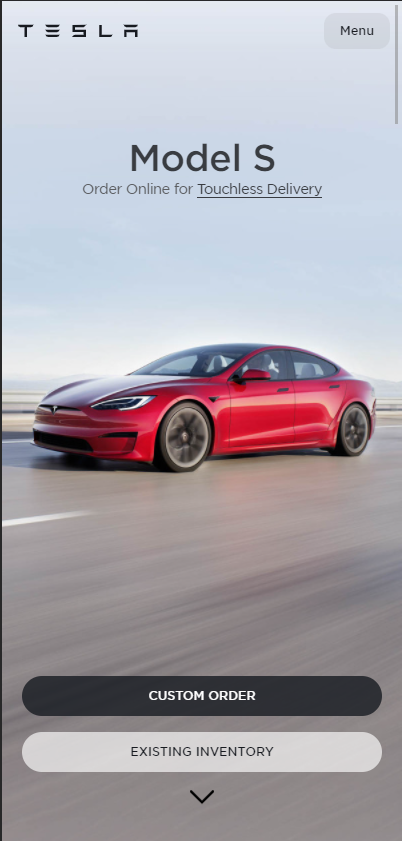

Tesla
I belive that this page is a good use of the rule of thirds becuase each significant feature of the page takes up about a third of it. The title, the image of a car, then the order buttons. They all get about a third of the page.
I also find this page to be a good example of Fitts's law as it is very ergonomic. The most important buttons are at the bottom of the page, close to the thumb. And to scroll between cars they have implemented, for lack of a better term, a tik-tok style scrolling system. Where all you need is a slight twitch of the thumb and it scrolls to the next page for you.
This page also is a great example of repetition as each "page" that you can scroll through has the same basic template and even has some elements, such as the buttons that are persistant and complement every page.